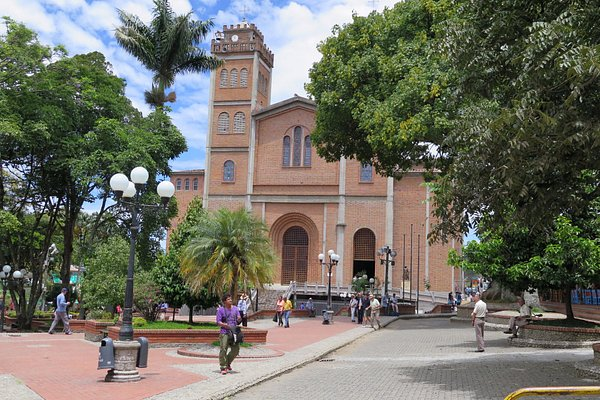

la pintada
Que hacer?
- Salto del Caballo
- pesca
- Rafting del Río Cauca en el Cañón del Pipintá
Te dejamos este video donde puedes ver un poco de lo que sera tu visita al pueblo
Donde comer?
Restaurante La Fonda Paisa
Conocido por su auténtica comida paisa y ambiente acogedor.
Restaurante La Cabaña de Don Mario
Ofrece platos típicos de la región en un entorno rústico y tranquilo.
Restaurante El Tucán:
Especializado en pescados y mariscos frescos, ideal si buscas opciones diferentes.
Donde hospedarse
En esta ocasión te recomendamos el hotel Hotel Finca La Romana:Ofrece habitaciones cómodas y acogedoras en medio de un entorno natural. Además, cuenta con piscina, restaurante y actividades al aire libre para disfrutar durante tu estadía.

En esta ocasión te recomendamos el hotel Hotel Campestre La Rivera:Ubicado a las afueras de La Pintada, este hotel ofrece habitaciones amplias y confortables con vistas panorámicas a los paisajes circundantes. También cuenta con piscina, zona de juegos y restaurante.